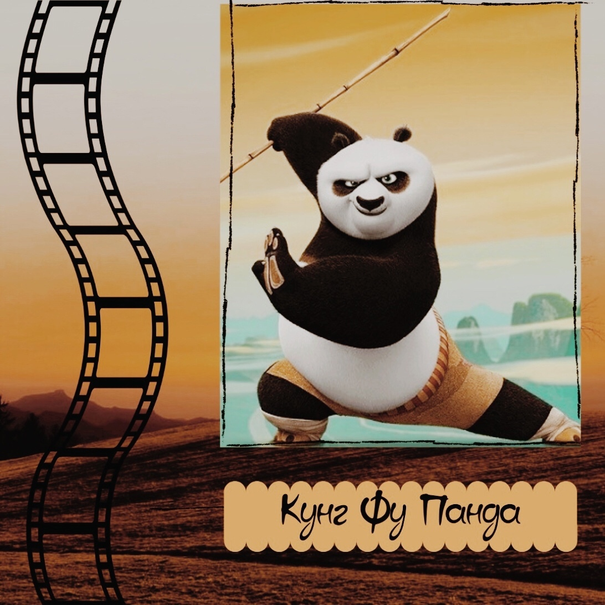
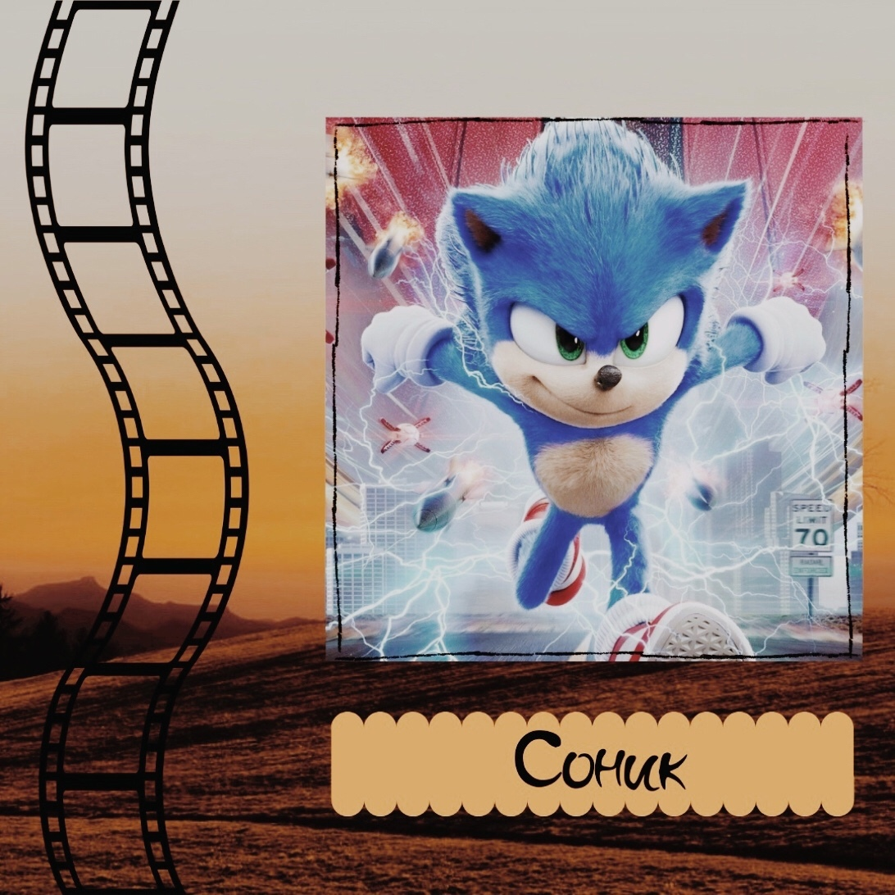
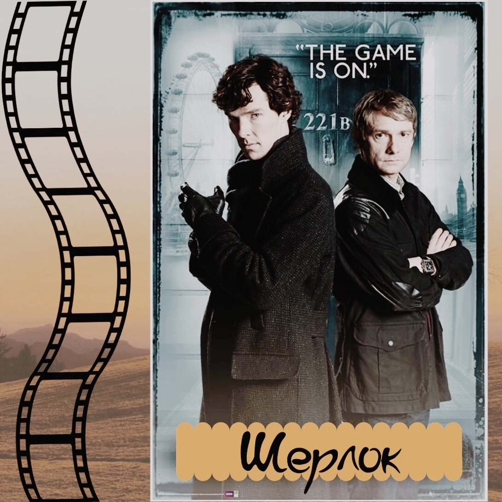
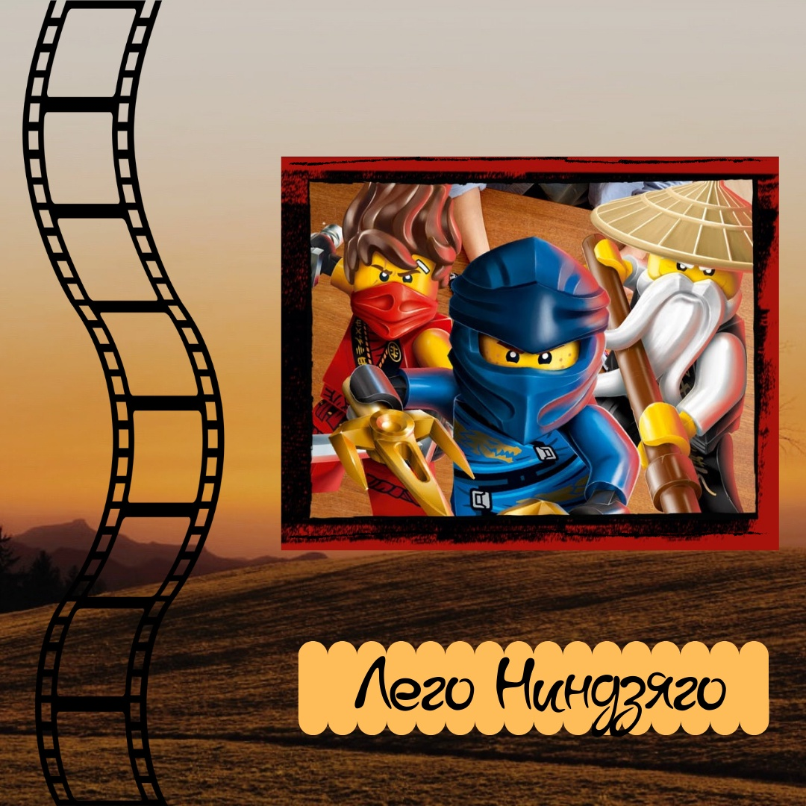
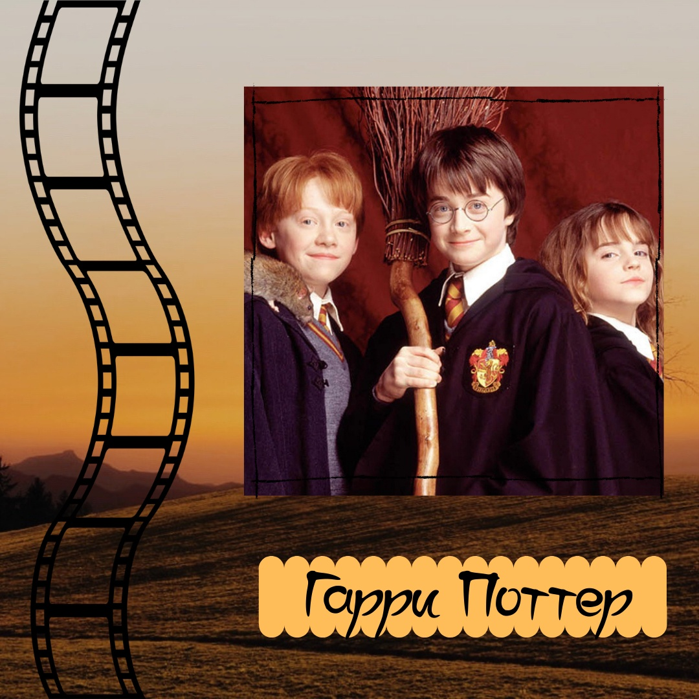
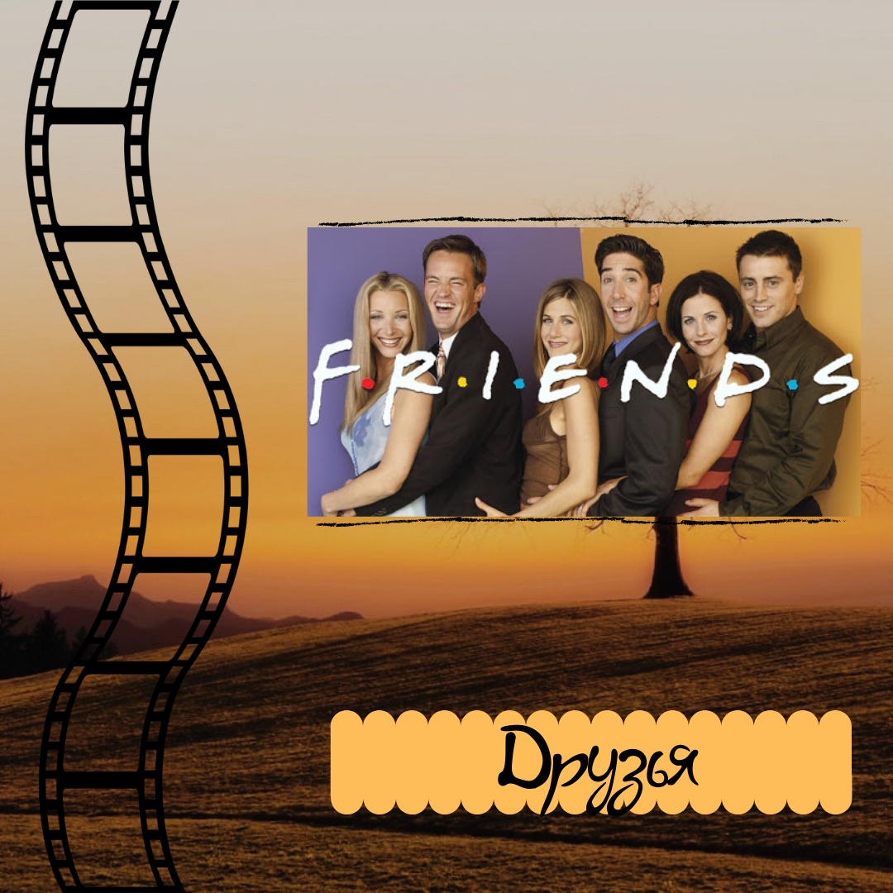
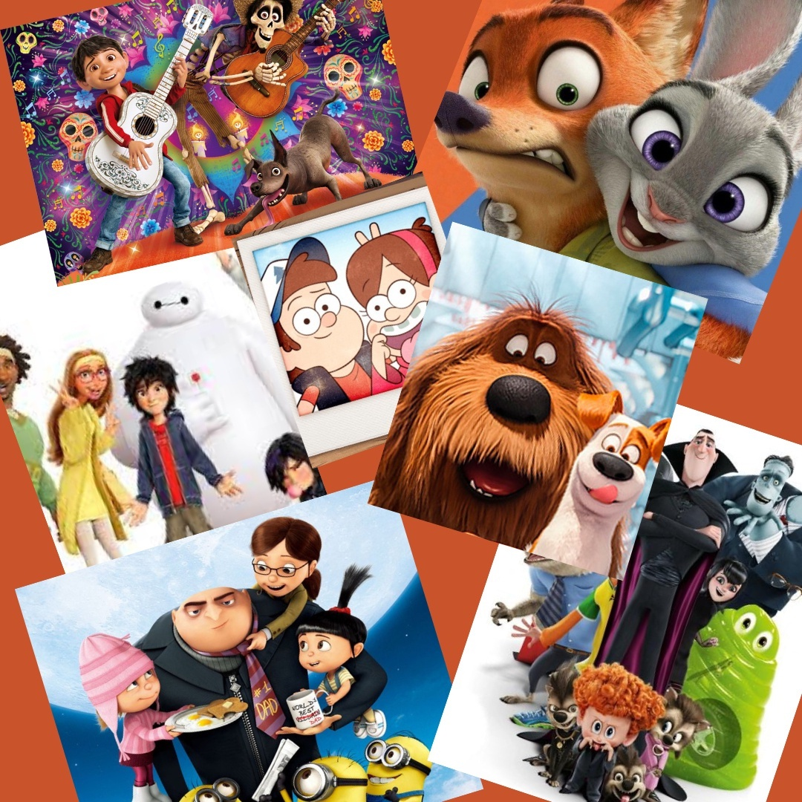
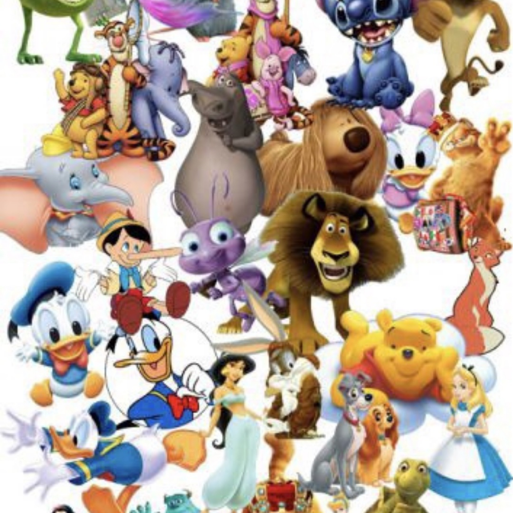

Уровень Elementary
Проходим модальные глаголы - MUST & CAN’T
(Ты должен то, ты не должен это) Все эти правила, обязанности…
Хорошо, наверное, быть принцессой (принцем)! За тебя все делают слуги, одевают, кормят, а ты танцуешь на балах, меняешь наряды и украшения, наслаждаешься жизнью…
А вот и нет! У них тоже есть дела и обязанности, которые не всегда им по душе.

Уровень Elementary
Present Simple Questions + Question Words
Изучать и тренировать грамматику английского языка ну намного веселее с любимыми героями мультиков.
Я вам предлагаю отработать навык постановки вопросов в Present Simple, в которых требуются вопросительные слова.
Моя мини разработочка скрасит любой урок, и скучные вопросы ученику будет веселее задавать, ведь его насмешит По, пухлый и харизматичный медведь-панда.

Уровень Elementary
Любимый PRESENT SIMPLE + Things we do
Эта тема есть в каждом учебнике. Предлагаю отвлечься от него. Возьмите для разнообразия отрывок из фильма «Соник в кино». Все дети (и взрослые тоже ) обожают этого милого ежика.
1) Сначала смотрим на портрет. Спрашиваем: Who is he? What do you know about him?
2) Просматриваем список дел. Смотрим видео и отмечаем галочкой те дела, которые Соник делает каждый день.
3) Говорим, что он делает каждый день, и чего он не делает.

Уровень Pre-Intermediate
Этот видео отрывок можно брать как дополнение к учебнику Solutions (pre-intermediate) 3rd edition.
Unit 8 там весь посвящён теме CRIME. И в разделе CULTURE как раз страничка про Шерлока (SB p115).
То есть ученик уже подготовлен в лексическом плане.
Отрывок достаточно сложный, но нам надо, чтобы студент понял и пересказал. Для этого я использую технику пересказа с опорой на ключевые слова.
1) Watch and match photos with names of the characters
2) Study the plan. Watch again and make notes.
3) Speak about the episode using the plan and your notes.
4) Study the plan and the useful vocabulary. Watch one more time trying to hear the words given. Speak again using all the useful vocabulary. (Тут можно дать пример от преподавателя)
Этот отрывок не надо ограничивать в количестве просмотров - чем больше, тем лучше. Сложно)

Уровень Elementary
Superlative Degree of adjectives
(Превосходная степень прилагательных)
Кто же из героев самый-самый?

Уровень Pre-Intermediate
Past Simple + Past Continuous с фильмом
«Гарри Поттер и философский камень»
2 отрывочка из фильма, к каждому есть задания

Уровень Elementary
Present Continuous
Веселее изучать английский по любимому сериалу. Посмотрите видео и скажите, что делают герои в данный момент.

Уровень Elementary
Going to + Will
Перед вами нарезка из кадров разных мультфильмов. Задача сказать, что собираются сделать герои (going to) - это если студенты смотрели, знают или уверены. Если не очень уверены, можно просто предположить или предсказать - I think they will...
Кстати, такую нарезку можно сделать по любимому фильму или мультфильму вашего ученика. А то идей у наших подопечных маловато - они собираются делать уроки или играть в компьютер, и все

Уровень Pre-Intermediate
USED TO / DIDN'T USE TO
Прошли эту тему? Потренируйте её с помощью любимых мультяшных героев. Задание простое - с помощью данных слов составить предложение о том, что герои раньше делали, но сейчас уже не делают.